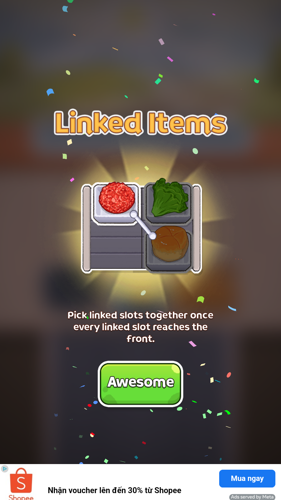
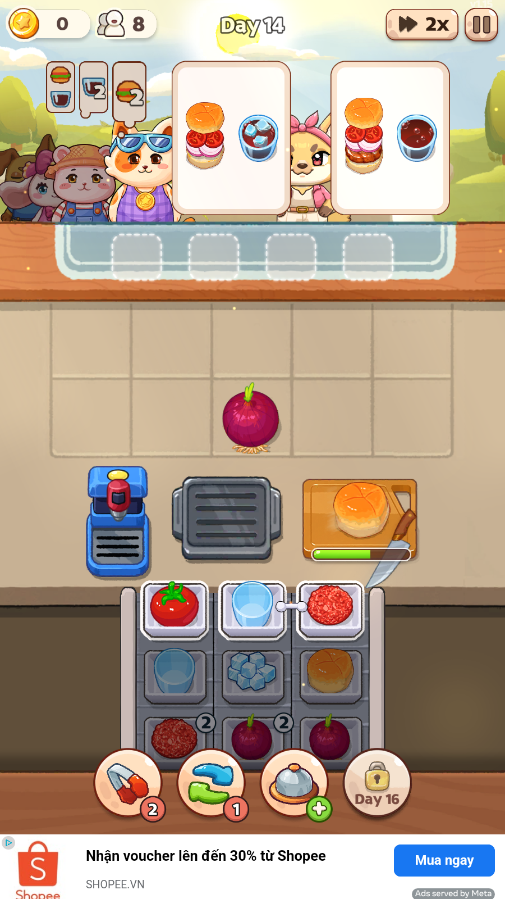
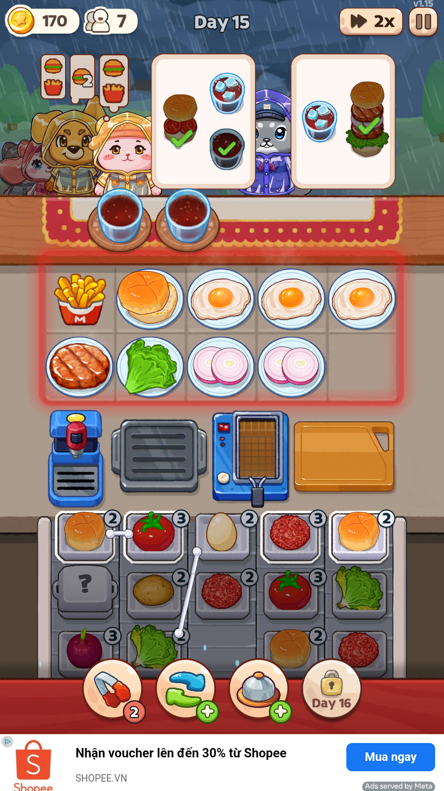
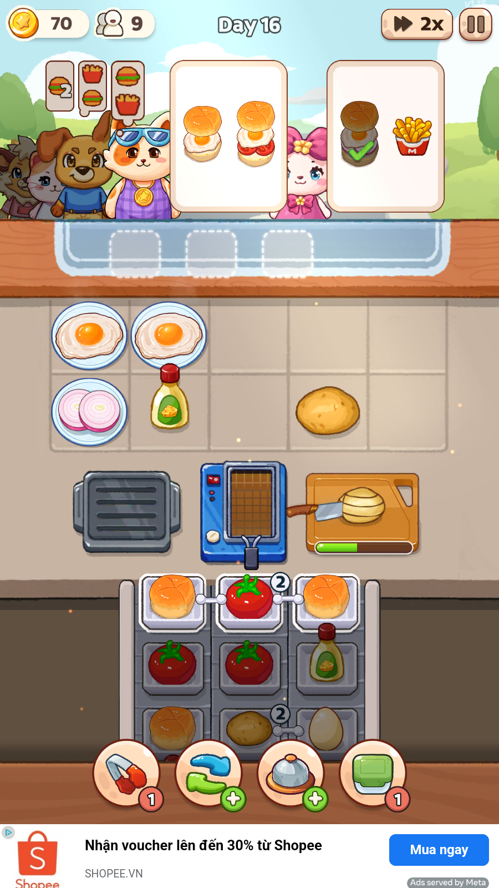

Món liên kết (Linked Items, nhóm `$` thứ hai)
Mô tả
- 2–3 ô nguyên liệu được nối bằng dây thành một "mắt xích": chỉ lấy được khi mọi ô trong chuỗi đã lên hàng trên cùng, và khi lấy thì cả chuỗi bay đi cùng lúc.
- Người chơi phải sắp xếp để các ô nối nhau cùng lên hàng 0 và còn đủ ô trống trên lưới 5×2 cho cả cụm (Playtest: cặp linked bị bỏ qua khi lưới còn 1 chỗ).
- Đây là cơ chế dùng nhiều nhất trong dữ liệu: 472/1 030 level APK (470/1 090 server live 16/11); gần như toàn bộ là chuỗi 2 ô (2 018 chuỗi) và 118 chuỗi 3 ô.
- Burger: level 14 là level đầu có chuỗi; popup "Linked Items" hiện ở màn thắng Day 13 (Playtest 16/11).
Thiết kế chi tiết
Tóm tắt thiết kế
- Code Chuỗi chỉ ready khi đủ thành viên và tất cả ở hàng 0 (
ConveyorChain.IsReady); chạm sớm bịRejectChain, không mất gì. - Code Lấy cả chuỗi bằng 1 chạm (
CollectBatch) nhưng cần đủ ô trống trên lưới cho cả cụm (HasRoomFor): cơ chế biến "lưới đầy" thành áp lực lên các chuỗi. - APK Cơ chế phổ biến nhất: 472/1 030 level (46%); hầu hết là chuỗi 2 ô (2 018 nhóm 2 ô + 118 nhóm 3 ô (tổng 2 136 nhóm)).
- Live 16/11 Server live 16/11: 470/1 090 level; pizza giảm từ 50 xuống 14 level vì server chỉ có 30 level pizza, bento tăng từ 4 lên 18.
- Playtest Day 14 chạm bun linked lấy cả bun + hành; Day 15 chạm cặp linked khi lưới 9/10 bị bỏ qua (cần đủ chỗ cho cả cặp).
- Nhận định Linked ép người chơi nhìn trước hai bước (kéo hai cột về cùng hàng 0) và có thể góp phần làm đầy lưới ở level khó; ca "softlock" Day 15 trong RESULTS_LIVE không do Linked mà là tưởng kẹt (còn patty lẻ đi được, xem IngredientGrid UC-10).
Luồng người chơi từng bước
- Học cơ chếGiao diện PlaytestThắng Day 13: popup "Linked Items" với hình thịt - xà lách - bun nối dây, nút "Awesome".

Popup "Linked Items" sau khi thắng Day 13: hình thịt băm nối dây với bun, nút "Awesome" - Chơi level đầu có chuỗiNgười chơi PlaytestDay 14: chạm bun nối hành: cả hai bay đi cùng lúc.

Day 14: chạm bun (nối với hành) lấy cả hai cùng lúc; bun lên thớt, hành lên lưới - Cần chỗ cho cả cụmHệ thống Code
HasRoomForkiểm tra số ô lưới cần cho cả chuỗi; thiếu thì không lấy.
Day 15: lưới 9/10 viền đỏ, chạm cặp linked (bun + cà chua) không phản hồi vì thiếu chỗ cho cả cặp - Chuỗi dài hơnNgười chơi PlaytestDay 16 có chuỗi 3 ô: cần cả ba ở hàng 0.

Day 16: chuỗi 3 ô (bun - cà chua - bun) nối bằng dây


Số level dùng chuỗi Linked theo map
| Map | APK: số level (level đầu) | Server live 16/11: số level (level đầu) |
|---|---|---|
| burger | 35 (L14) | 36 (L14) |
| coffee | 55 (L3) | 55 (L3) |
| sushi | 66 (L4) | 66 (L4) |
| pasta | 50 (L4) | 52 (L4) |
| icecream | 39 (L7) | 39 (L7) |
| sandwich | 47 (L1) | 47 (L1) |
| tteokbokki | 41 (L4) | 39 (L4) |
| seafood | 50 (L4) | 50 (L4) |
| dimsum | 35 (L8) | 31 (L8) |
| pizza | 50 (L4) | 14 (L4) |
| bento | 4 (L6) | 18 (L9) |
| croissant | - | 17 (L3) |
| tacos | - | 6 (L11) |
| Tổng | 472 / 1 030 level chơi được | 470 / 1 090 level chơi được |
Nguồn: Data/levels/_stats.json (APK), Docs/LEVEL_DATA.md (server).
Mã hoá trong chuỗi level
| Thành phần | Cú pháp | Ghi chú |
|---|---|---|
| Section hàng đợi | cột$Combined$Linked | tối đa 3 phần; phần thứ 3 = Linked (QueueGroupKind 1) |
| Nhóm | x-y,x-y;x-y,x-y | ô là cột-hàng, nhóm cách nhau ; |
| Ví dụ burger L14 (chuỗi thô) | $$0-0,1-0;0-6,1-7;2-8,1-9;2-0,1-1;1-3,2-5 | section Combined rỗng ($$), 5 nhóm Linked 2 ô; ô của một nhóm có thể lệch cột và lệch hàng (0-6 nối 1-7) |
Cú pháp theo Tools/data/fp_level_syntax.py (đã đối chiếu IngredientQueueTranslator.ParseGroups).
Vận dụng cho game khác
- Ràng buộc "phải cùng sẵn sàng" biến một thao tác đơn giản (chạm lấy) thành bài toán sắp xếp mà không thêm nút nào.
- Gắn điều kiện tài nguyên (chỗ trống) vào hành động nhóm để các cơ chế khác nhau (lưới, hàng đợi) tương tác với nhau.
Bảng tổng hợp mọi tính năng đã làm chi tiết: FoodiePop_ThietKeChiTiet.xlsx.
Mở khóa & điểm vào
Bật khi chuỗi hàng đợi có section $ thứ hai (Linked; IngredientQueueInLevel.IsHaveLinkedSlotGroups). Burger L14, coffee L3, sandwich L1 (map nào cũng có). Popup intro một lần (PlayerPrefs IntroLinkedSlot, UIInLevelCakeOrder.IsDoneIntroLinkedSlotMechanics).
Điểm vào:
- Màn thắng liền trước level đầu có chuỗi: popup
UIPopupNewFeather"Linked Items" / "Awesome" (khoáSlot-Linked) - Đầu level đầu tiên có chuỗi: popup
UIPopup-IntroMechanic-Link-Slot/ "Got it!" nếu chưa xem - Bàn chơi: 2–3 ô nối bằng dây trắng trên băng chuyền
Cách hoạt động
- Chuỗi hàng đợi được parse thành 3 section cách nhau
$: cột (%), nhóm Combined, nhóm Linked. Mỗi nhóm Linked là danh sách ôx-y(cột-hàng) cách nhau,, các nhóm cách nhau;. StackModeService.ApplySlotGroupsgọiStackModeService.LinkChaincho từng nhóm Linked: các bundle trong nhóm nhận cùngChainIdvàChainSize.ConveyorGrid.SetLinkChaintạoConveyorChain(Id, Size, Members);ConveyorChainRopeViewvẽ dây nối giữa các ô (độ dày 0,125).- Chạm một ô trong chuỗi:
ConveyorPickup.Allowsyêu cầurequireChainReady;ConveyorChain.IsReadychỉ true khi đủSizethành viên và tất cả ở hàng 0. - Chưa sẵn sàng:
ConveyorPickup.RejectChainrung cả chuỗi, không lấy gì. Sẵn sàng nhưng lưới không đủ chỗ cho cả cụm (ConveyorPickup.HasRoomFor): bị từ chối (nháy cảnh báo lưới). - Hợp lệ:
ConveyorPickup.CollectBatchgom cả chuỗi thành một batch, các ô bay tới trạm / lưới; mỗi cột dồn lên. - Nếu một thành viên đang đóng băng, cả chuỗi coi như đóng băng (
IngredientConveyorItem.IsChainFrozen).
Ảnh chụp
Bấm ảnh để phóng to, dùng phím ← → để chuyển ảnh. Nhãn màu cho biết nguồn bằng chứng của ảnh.

Số liệu chính
| Chỉ số | Giá trị | Nguồn |
|---|---|---|
| Level dùng chuỗi Linked (APK) | 472 / 1 030 | Data/levels/_stats.json (queue.Linked) |
| Level dùng chuỗi Linked (server live 16/11) | 470 / 1 090 | Docs/LEVEL_DATA.md |
| Kích thước chuỗi (APK) | 2 ô: 2 018 / 3 ô: 118 | Data/levels/*/L*.json |
| Nhóm Linked mỗi level (level có chuỗi) | trung bình 4,5 / tối đa 18 | Data/levels/*/L*.json |
| Level đầu tiên (burger / coffee / sandwich) | L14 / L3 / L1 | Data/levels/_stats.json |
Use case (10)
Bấm vào từng use case để mở. Mở/đóng tất cả
UC-01 Chuỗi xuất hiện trên bàn
Các bước- Parse section Linked (
x-y,x-y;...) LinkChaingán ChainId / ChainSize- Dựng dây nối
| Actor | System |
|---|---|
| Trigger | Level tải xong |
| Điều kiện | Level có section Linked |
| Kết quả | Người chơi thấy các ô nối dây |
| Quy tắc / số liệu | Chuỗi 2 ô: 2 018 nhóm; 3 ô: 118 nhóm (APK); mỗi level có chuỗi trung bình 4,5 nhóm, tối đa 18 |
| Evidence | StackModeService.LinkChain |
UC-02 Chạm khi chưa đủ thành viên ở hàng 0
Các bướcConveyorPickup.Allows→ConveyorChain.IsReady= falseRejectChainrung cả chuỗi
| Actor | Player |
|---|---|
| Trigger | Chạm 1 ô của chuỗi khi bạn đồng hành còn ở hàng 2+ |
| Điều kiện | Chuỗi chưa ready |
| Kết quả | Không lấy được; không mất gì |
| Quy tắc / số liệu | IsReady cần Members.Count >= Size và mọi thành viên Row = 0 |
| Evidence | ConveyorPickup.RejectChain |
UC-03 Lấy trọn chuỗi
Các bướcCanPickChain/HasRoomForkiểm traCollectBatchgom thành viên- Các ô bay tới trạm hoặc lưới
| Actor | Player |
|---|---|
| Trigger | Chạm khi chuỗi ready và lưới đủ chỗ |
| Điều kiện | Chuỗi ready, đủ chỗ |
| Kết quả | Cả chuỗi được lấy bằng 1 chạm; cột dồn lên |
| Quy tắc / số liệu | Số ô lưới cần = tổng số bản sao của cả chuỗi (CellsNeededOnLastCheck) |
| Evidence | ConveyorPickup.CollectBatch |
UC-04 Lưới đầy: không lấy được chuỗi
Các bướcHasRoomFortrả false- Lưới nháy viền đỏ
| Actor | Player |
|---|---|
| Trigger | Chạm chuỗi ready khi lưới gần đầy |
| Điều kiện | Lưới còn ít ô trống |
| Kết quả | Không phản hồi (Playtest Day 15: lưới 9/10, chạm cặp bun + cà chua bị bỏ qua) |
| Quy tắc / số liệu | Chuỗi cần chỗ cho cả cụm, không lấy được từng ô |
| Evidence | ConveyorPickup.HasRoomFor |
UC-05 Chuỗi có ô đóng băng
Các bướcIsChainFrozentrả true- Không thể chọn cả chuỗi (kể cả bằng Tongs: lý do "frozen")
| Actor | Player |
|---|---|
| Trigger | Một thành viên có #1:n |
| Điều kiện | Chuỗi chứa ô Freeze |
| Kết quả | Chờ ô lân cận lấy để rã băng |
| Quy tắc / số liệu | Xem FrozenSlot |
| Evidence | IngredientConveyorItem.IsChainFrozen |
UC-06 Booster Tongs với chuỗi
Các bướcConveyorPickup.CanPickChain/IsPickAnyCandidatelọc theopickAnyRows(7 hàng)- Chọn 1 ô trong chuỗi
| Actor | Player |
|---|---|
| Trigger | Dùng Tongs |
| Điều kiện | Có Tongs |
| Kết quả | Lấy được trọn chuỗi nếu đủ chỗ |
| Quy tắc / số liệu | Tongs bỏ qua điều kiện hàng 0 của chuỗi nhưng vẫn cần chỗ trống |
| Evidence | ConveyorPickup.CanPickChain |
UC-07 Save-me bẻ chuỗi khi hết nước đi
Các bướcConveyorStuckAlert.Classifytrả verdict- Save-me có thể gọi
IngredientSpawnerController.TryBreakChainAtFront→ConveyorGrid.BreakChainAt
| Actor | Player |
|---|---|
| Trigger | Hết ô / hết nước đi (OutOfSlot / OutOfMove) |
| Điều kiện | Hết nước đi |
| Kết quả | Chuỗi ở hàng đầu bị cắt dây thành ô lẻ |
| Quy tắc / số liệu | Tên method có trong 1.15; điều kiện gọi lấy từ 1.11 (H24), chưa kiểm lại trong thân hàm |
| Evidence | IngredientSpawnerController.TryBreakChainAtFront |
UC-08 Popup "New Feature" ở màn thắng liền trước
Các bướcUIPopupNewFeather.GetNewObstacleKeystrảSlot-Linked- Popup "Linked Items – Pick linked slots together once every linked slot reaches the front." nút "Awesome"
| Actor | Player |
|---|---|
| Trigger | Thắng level N, level N+1 lần đầu có chuỗi |
| Điều kiện | Level kế có cơ chế mới |
| Kết quả | Người chơi được báo trước (Playtest: sau Day 13, thanh "New Feature 6/6") |
| Quy tắc / số liệu | Level 14 (burger) là level đầu có Linked |
| Evidence | UIPopupNewFeather.GetNewObstacleKeys |
UC-09 Popup giới thiệu ở đầu level
Các bướcUIInLevelCakeOrder.ShowTutorialchạyTryShowIntroLinkedSlotMechanics(sau Grid và Slot)- Mở
UIPopup-IntroMechanic-Link-Slot Variant - Bấm "Got it!" →
SetDoneIntroLinkedSlotMechanics
| Actor | Player |
|---|---|
| Trigger | Vào level có Linked và chưa có cờ IntroLinkedSlot |
| Điều kiện | Chưa có cờ |
| Kết quả | Cờ IntroLinkedSlot = 1 |
| Quy tắc / số liệu | Điều kiện: IngredientQueueInLevel.IsHaveLinkedSlotGroups |
| Evidence | UIInLevelCakeOrder.SetDoneIntroLinkedSlotMechanics |
UC-10 Ô linked kề nhau trên nhiều cột
Các bướcConveyorChain.AreRoped(colA, colB, linkCols)quyết định cặp cột nào có dây
| Actor | Player |
|---|---|
| Trigger | Dựng dây giữa các cột |
| Điều kiện | Chuỗi nhiều cột |
| Kết quả | Dây vẽ giữa 2 ô; chuỗi chéo cột (Playtest Day 14: bun-hành nối ngang; thịt băm nối chéo xuống hàng 2) |
| Quy tắc / số liệu | Ô nối có thể khác cột và khác hàng |
| Evidence | ConveyorChain.AreRoped |
Cấu hình (8)
Gộp mọi nguồn: const trong code, giá trị mặc định trong APK, storage key, AB test, cờ server.
| Nguồn | Key | Kiểu | Giá trị | Ý nghĩa | Nơi định nghĩa |
|---|---|---|---|---|---|
| level string | queue section 2 (sau `$` thứ hai) | groups | x-y,x-y;x-y,x-y (cột-hàng, x,y >= 0) | danh sách nhóm Linked (QueueGroupKind 1) | IngredientQueueTranslator.ParseGroups |
| Data/levels | Kích thước chuỗi (APK, 11 map) | int | 2 ô: 2 018 nhóm; 3 ô: 118 nhóm | chuỗi tối đa 3 ô trong dữ liệu | Data/levels/*/L*.json queue.linked |
| asset | ropeWidth / ropeColor (scene) | float / color | 0,125 / trắng | dây nối giữa các ô | FS*.unity (IngredientSpawnerController) |
| asset | chainChance / chainSize (scene) | float / Vector2Int | 0 / (2, 2) ở cả 11 map | tạo chuỗi ngẫu nhiên khi hàng đợi do ConveyorBundleBuilder sinh; = 0 nên không dùng | FS*.unity |
| field | ConveyorBundle.ChainId / ChainSize | int | gán bởi LinkChain | nhận biết thành viên chuỗi | AnhPD.FoodOrder.ConveyorBundle |
| storage key | PlayerPrefs IntroLinkedSlot | int | 1 = đã xem | cờ intro Linked | UIInLevelCakeOrder.GetKeyIsDoneIntroLinkedSlotMechanics |
| code const | UINewFeartherConfig.LinkedSlotObstacleKey | string | "Slot-Linked" | khoá popup New Feature | TrungKien.UI.NewFearther.UINewFeartherConfig |
| asset | Popup text (UI_InGame en-GB) | string | "Linked Items" / "Pick linked slots together once every linked slot reaches the front." / "Got it!" | popup intro và New Feature (cùng nội dung) | UIPopup-IntroMechanic-Link-Slot Variant.prefab |
Backend / server
| Command | Chiều | Mục đích |
|---|---|---|
Remote Config map_config_<map>_lv_<n> / map_config_<map>_lv_all_override_default | server→client | Chuỗi level (khách ~ lưới ~ hàng đợi) mang token của cơ chế này; server live 16/11 ghi đè 1 090 level (xem Docs/LEVEL_DATA.md). Không có API riêng cho cơ chế. |
Giao diện (UI)
| Element | Class | Mục đích |
|---|---|---|
| Dây nối giữa các ô | AnhPD.FoodOrder.ConveyorChainRopeView | vẽ dây và rung khi bị từ chối |
| Popup giới thiệu | CakeOrder.InGame.UIPopupIntroNewMechanics | prefab Link-Slot |
| Nút / popup New Feature | TrungKien.UI.NewFearther.UIPopupNewFeather | báo trước ở màn thắng |
Storage keys
IntroLinkedSlot
Còn thiếu / chưa xác minh
- Không thấy event analytics riêng cho cơ chế này.
- Điều kiện save-me bẻ chuỗi (
TryBreakChainAtFront) lấy từ 1.11; chưa đọc thân hàm 1.15. - Số bản sao tối đa của chuỗi (amount 1–4 mỗi ô) và ảnh hưởng tới ô lưới cần chưa tính lại bằng bot.
Tính năng liên quan
Băng chuyền nguyên liệu (ConveyorGrid) Ô ẩn (Hidden Item, token #2) Ô đóng băng (Frozen Item, token #1:n) Món đôi / bó món (Food Bundle, nhóm `$` thứ nhất) Booster trong màn Giới thiệu tính năng mới (New Feature x/N) Định dạng level, độ khó & thống kê
Nguồn đã đọc
_analysis/code/decompiled/Assembly-CSharp/AnhPD.FoodOrder.ConveyorChain.c (IsReady, AreRoped)_analysis/code/decompiled/Assembly-CSharp/AnhPD.FoodOrder.ConveyorPickup.c (Allows, RejectChain, CollectBatch, HasRoomFor)_analysis/code/decompiled/Assembly-CSharp/AnhPD.FoodOrder.StackModeService.c (ApplySlotGroups, LinkChain)_analysis/code/decompiled/Assembly-CSharp/TrungKien.UI.NewFearther.NewToolLevelPreview.cData/config/UINewFeartherConfig.jsonDocs/LEVEL_DATA.mdData/levels/*_analysis/live/fp_20261116/RESULTS_LIVE.mdF:/0_Phuc/Clone/Pop/Docs/decode/GAMEPLAY.md (H24, gợi ý 1.11)